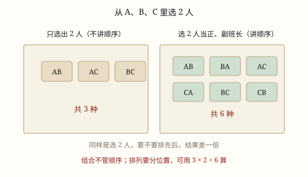

排列与组合
同样是从几个人里挑出几个：顺序算数的叫排列，用连乘；顺序不算数的叫组合，连乘之后还要除掉同一组人自己排队的次数。
| 所属主题 | 计数方法 |
|---|---|
| 所属模块 | 数学思考 |
| 课标学段 | 第三学段（5~6年级） |
| 前置知识 | 乘法原理与分步计数 |
| 核心素养 | 推理意识模型意识符号意识 |
课标要求
| 数与代数·数量关系 | 能解决生活中的简单问题，并能对结果的实际意义作出解释，经历探索简单规律的过程（例14），形成初步的模型意识和应用意识。 印刷第 21 页 行为动词：运用 |
|---|
说明
同样一句「从 5 个人里选 3 个人」，问法不同，答案差很多。要是选出来还要排成一排照相，甲站中间和乙站中间是两张不同的照片；要是选出来只是去扫地，谁站哪儿根本没人管。
顺序算数的叫排列。5 个人里选 3 人排队：第一个位置 5 人选；定下第一个，第二个位置剩 4 人；再定下第二个，第三个位置剩 3 人，5×4×3=60。这里一个位置算一步，用的正是分步计数的乘法。
顺序不算数的叫组合。还是那 5 个人选 3 个去扫地。照排队的算法，同一组人（比如甲乙丙）会被数好几次：甲乙丙、甲丙乙、乙甲丙、乙丙甲、丙甲乙、丙乙甲，一共 6 次。每组都正好 6 次，所以把 60 平均分成 6 份，60÷6=10。
组合为什么要除、除几，道理很朴素：排队时同一组人被反复数，重复的次数就是这组人自己排队的排法数。3 个人自己排队是 3×2×1=6，4 个人是 4×3×2×1=24。选几个人，就除以几个人自己的排法数。
判断只需一句：把结果里两个人的位置一换，事情变没变。变了是排列，没变是组合。拍照、站队、发不同的岗位、比赛的名次，位置一换就不同，是排列；扫地、选菜、抽号码、组队，位置一换还是一回事，是组合。
再看一个更小的例子，把两种问法摆在一起：4 个人里选 2 个。排队（比如两个人一前一后抬东西，谁在前有讲究）是 4×3=12 种；只是选 2 个人去搬书（不分前后）是 12÷2=6 种。选的人越少，重复的次数越少，但只要有「同一组被数了几遍」，就一定要除。
使用场景
班级值日：选 3 个人扫地，谁先扫谁后扫无所谓，是组合。
升旗队列：选 3 个人站成一排，站的位置不同，照片就不同，是排列。
抽奖：从若干号码球里抽出 3 个中奖号码，只关心中不中，不关心抽出顺序，是组合。
接力赛：4 个人跑 4 棒，谁跑哪一棒很要紧，是排列。
食堂选菜：5 种菜里选 3 种，先打哪个后打哪个不影响盘子里的菜，是组合。
注意点
先判断顺序，再动笔。判断错了，后面全错。
组合题不能乘完就交卷，必须把重复的次数除掉。
除的数是「选出的这些人自己排队的排法数」：选 2 人除 2×1=2，选 3 人除 3×2×1=6，选 4 人除 24。
一个人不能同时占两个位置，选过的人要从后面的人数里去掉，连乘时每一步都要少 1。
「分别担任」「站成一排」「顺序不同算不同」是排列的信号；「选出几名」「派几个人去」多半是组合。
人数少的时候可以全部列出来核对。选 2 人的组合只有几组，用名字写一遍，和算出来的数对一对，错的会立刻露出来。

图 1：选人还是排位置，一个要除、一个不用
为什么是这样
算理推导
把 5 个人记作甲乙丙丁戊。先算「选 3 人排队照相」：第一个位置 5 人选；定下第一个后，第二个位置剩 4 人；第三个位置剩 3 人，5×4×3=60。
再算「选 3 人去扫地」。扫地不分前后，可刚才那 60 种里，同一组 3 个人被反复数了：甲乙丙、甲丙乙、乙甲丙、乙丙甲、丙甲乙、丙乙甲，这 6 种排法其实是同一组人。
每一组都这样：3 个人内部随便怎么换位置，都还是这一组人。3 个人自己排队的排法数是 3×2×1=6，所以 60 里每一组都被数了 6 次。
把 60 平均分成 6 份，60÷6=10，这才是「选 3 人扫地」的答案。60 和 10 差 6 倍，这 6 倍不是巧合，正好是 3 个人自己排队的方式数。
换个说法体会这 6 倍：扫地只要 10 组人，可每一组人一站队就能变出 6 张不同的照片，10×6=60，正好把 60 张照片分完。
选 4 个人扫地时，重复的次数变成 4×3×2×1=24，所以要除以 24。选几个人，就除以几个人自己排队的排法数，这一步不能凭感觉。
动手实验
写 5 张名字卡片。先只取甲乙丙 3 张，实际摆一摆能摆出几种不同的排队，数出 6 种。再把 5 人的排队情况写成表格（可以只写前 12 行体会一下），按「用了哪 3 个人」给它们分组，会发现每组正好 6 行，一共 10 组。最后数一数：10 组乘以每组 6 行，是不是正好回到 60 行。
按场景的例题
例 1（场景：上学日常） 班干部竞选
班里要从 4 名同学中选 3 人，分别担任班长、学习委员、体育委员，有多少种选法？
解：三个岗位不同，换个岗位就是另一种结果，是排列。班长 4 人选，学习委员剩 3 人，体育委员剩 2 人，4×3×2=24。
答：24 种。
例 2（场景：饮食与配比） 食堂选三种菜
食堂有 5 种菜，午餐要选 3 种，有多少种选法？
解：只是选菜，先打哪个不影响盘子里的菜，是组合。先按排队算 5×4×3=60，3 种菜自己排有 3×2×1=6 种，60÷6=10。
答：10 种。
例 3（场景：购物消费） 抽奖抽号码
抽奖箱里有编号 1 到 6 的 6 个球，一次抽出 3 个作为中奖号码（不分先后），有多少种结果？
解：6×5×4=120，三个号码自己排有 3×2×1=6 种，120÷6=20。
答：20 种。
例 4（场景：家庭与年龄） 拍全家福
一家四口拍全家福，四个人站成一排，有多少种站法？
解：4 个位置依次选人：4×3×2×1=24。
答：24 种。
例 5（场景：物流运输） 快递站排班
快递站有 6 名分拣员，要选 2 人上早班（两人做同样的事，不分先后），有多少种选法？
解：先按先后算：6×5=30；两人自己排有 2×1=2 种，30÷2=15。
答：15 种。
常用推论
从 n 人里选 m 人排队，从 n 开始往下连乘 m 个数。
从 n 人里选 m 人只选不排，先连乘，再除以 m 个人自己排队的连乘。
选出的和剩下的对称：5 人选 3 人和 5 人选 2 人，结果都是 10。
从 n 个人里全部排成一排，是 n 一直乘到 1。
组合的答案乘以「这组人自己的排法数」，就回到排列的答案，这也是检查有没有算错的笨办法。
题目里人数的「选几个」和「剩几个」地位相同，所以哪边小就算哪边，可以少乘几个数。
易错点
错5 人选 3 人去扫地，算成 5×4×3=60 种。
为什么错扫地不看顺序，60 里同一组 3 个人被数了 6 次，重复没除掉。
正确60÷(3×2×1)=10 种。
错4 人选 3 人担任三个不同岗位，算成 4 种。
为什么错只数了「选了谁」，没数「谁去哪个岗位」，把排列当成了组合。
正确4×3×2=24 种。
错5 人选 2 人值日，算成 5×4÷(3×2×1)。
为什么错除数用错了。选的是 2 个人，重复数是这 2 个人自己的排法 2×1=2，不是 3 个人的 6。
正确20÷2=10 种。
直观理解
排队照相，换个位置照片就不一样，所以每个位置都得单独数一遍；扫地只要人在场，同一组人被数了好几遍，得把多数的除回去。除以几，就看这组人自己能有几种站法：三个人能站出六种，就除以六。
先选后排是排列，只选不排是组合；一组人数好几遍，除它自己就没错。